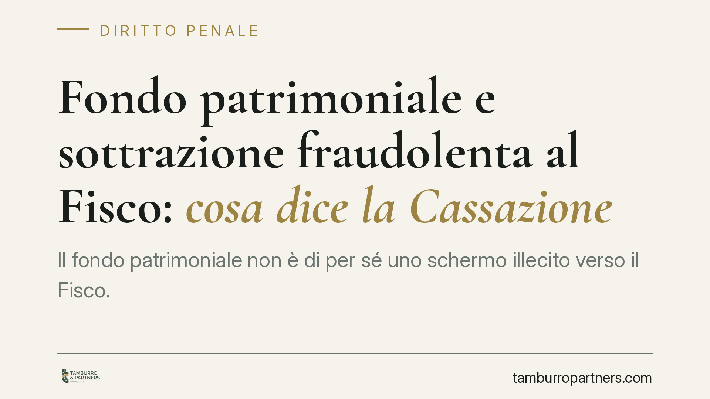

Fondo patrimoniale e sottrazione fraudolenta al Fisco: cosa dice la Cassazione
Il fondo patrimoniale non è di per sé uno schermo illecito verso il Fisco. Con la sentenza 5760/2026 la Cassazione precisa che la sua costituzione integra reato solo se l'atto è fraudolento e concretamente idoneo a rendere inefficace la riscossione. Il mero tempismo sospetto, da solo, non basta. Una distinzione decisiva per contribuenti e coniugi.

Il fatto
Un contribuente costituisce un fondo patrimoniale mentre pendono debiti verso l'Agenzia delle Entrate. Secondo il Pubblico Ministero, l'operazione avrebbe avuto un solo scopo: mettere i beni al riparo dalla riscossione. Da qui l'accusa di sottrazione fraudolenta al pagamento di imposte.
La Corte di Cassazione, con la sentenza n. 5760/2026, ridimensiona l'automatismo accusatorio. Costituire un fondo patrimoniale non equivale, senza altro, a commettere un reato. Serve un elemento in più: la frode e l'idoneità concreta a vanificare la riscossione.
Inquadramento normativo
Il fondo patrimoniale è disciplinato dagli articoli 167 e seguenti del Codice civile. È l'atto con cui uno o entrambi i coniugi (o un terzo) destinano determinati beni a soddisfare i bisogni della famiglia. L'articolo 170 c.c. stabilisce che i beni del fondo non possono essere aggrediti per debiti estranei ai bisogni familiari, purché il creditore ne fosse a conoscenza. È qui che nasce l'idea, spesso errata, del fondo come "cassaforte" intoccabile.
Sul versante penale rileva l'articolo 11 del D.Lgs. 74/2000, che punisce chi, per sottrarsi al pagamento di imposte oltre una certa soglia, aliena simulatamente o compie atti fraudolenti sui propri beni idonei a rendere in tutto o in parte inefficace la procedura di riscossione coattiva. Il testo richiede tre requisiti congiunti: il fine di evasione, la natura fraudolenta dell'atto e l'idoneità concreta a ostacolare il recupero.
Resta poi, sul piano civile, l'azione revocatoria dell'articolo 2901 c.c., strumento distinto con cui il creditore può far dichiarare inefficace nei suoi confronti l'atto dispositivo che pregiudica le sue ragioni.
Cosa dice davvero la Cassazione
Il punto centrale della decisione è la distinzione tra atto lecito e atto fraudolento. La costituzione del fondo patrimoniale è, in sé, un negozio previsto dalla legge. Diventa penalmente rilevante solo quando assume connotazione fraudolenta e produce un effetto reale sulla capacità del Fisco di riscuotere.
Non basta quindi il sospetto derivante dalla vicinanza temporale tra debito tributario e costituzione del fondo. Il "tempismo" può essere un indizio, ma da solo non integra il reato. Occorre dimostrare che l'operazione era artificiosa e capace di svuotare concretamente le garanzie patrimoniali del debitore.
È una lettura garantista ma coerente con la lettera dell'articolo 11: il diritto penale colpisce la condotta ingannatoria e dannosa, non l'esercizio di una facoltà civilistica legittima.
Implicazioni pratiche
Per il contribuente e per i coniugi la sentenza offre un criterio di orientamento. Un fondo patrimoniale costituito per reali esigenze di tutela della famiglia, in una situazione in cui esistono altri beni aggredibili, difficilmente supera la soglia della fraudolenza.
All'opposto, un fondo che assorba l'intero patrimonio del debitore, privo di una funzione familiare autentica e nato in prossimità dell'accertamento fiscale, resta esposto sia alla contestazione penale sia alla revocatoria civile.
Attenzione: la pronuncia non trasforma il fondo in uno strumento di pianificazione anti-Fisco. Chiarisce solo dove passa la linea tra difesa legittima del patrimonio familiare e condotta punibile. La finalità della famiglia deve essere concreta e verificabile, non una veste formale.
Cosa fare in concreto
- Verificate la posizione debitoria prima di costituire un fondo patrimoniale: se esistono debiti tributari rilevanti, valutate ogni scelta con un professionista.
- Documentate le finalità familiari dell'atto (esigenze abitative, tutela dei figli, gestione dei beni comuni), così da fondare la reale destinazione ai bisogni della famiglia.
- Non concentrate l'intero patrimonio nel fondo: lasciare beni aggredibili riduce sia il rischio penale sia quello revocatorio.
- Conservate una linea temporale coerente: evitate operazioni ravvicinate ad accertamenti o cartelle in corso.
- Chiedete una valutazione integrata, civile, tributaria e penale, prima di procedere: consigliamo di non affidarsi a modelli standardizzati.
Disclaimer
Contributo informativo a cura di Tamburro & Partners - Avv. Giuseppe Tamburro. Non costituisce parere legale.
Ogni condominio ha una storia a sé.
Se gestisci un'amministrazione e vuoi un confronto su una specifica questione condominiale, scrivi allo studio. Ti rispondiamo entro un giorno lavorativo.